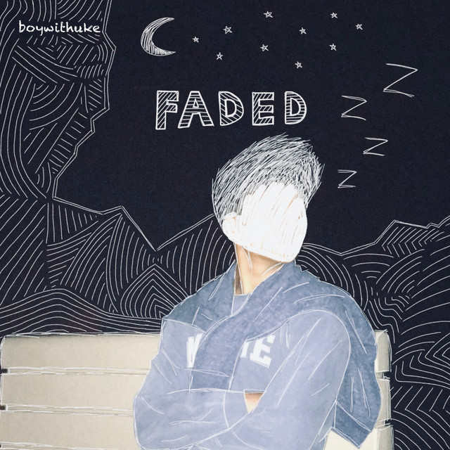
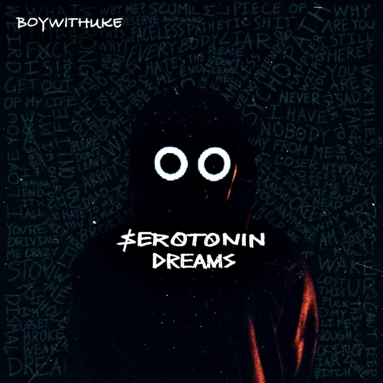
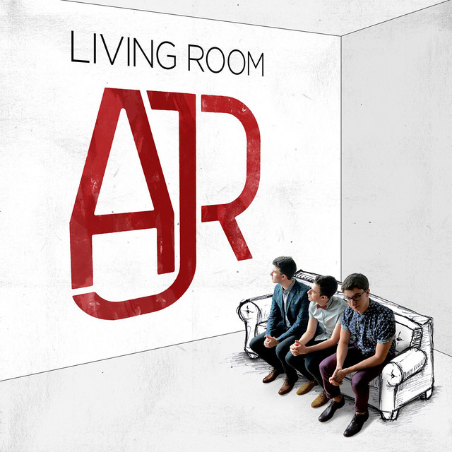

I have multiple musical artists that I really like. My list of favourite artists is almost as long as I am tall. So as not to bore everyone with all the silly details I will choose to only talk about my top five. My very favourite artist, or artists, I should say is a band called Stray Kids. They are a kpop band but their music and lyrics captivate me. Next on the list is Taylor Swift who is a solo american singer. Then there are two other soloists on my list. BoyWithUke and Tessa Violet in third and forth respectively. Lastly on the last spot on my top five is AJR, a family band that has been active for a really long time.
Taylor Alison Swift is an American Singer-Songwriter that is very passionate about what she does. She has been singing since she was a child. She learned to play the guiter when she was 12 from unlikely teachers like the computer repairman. Although her creative streak started earlier than that at the age of nine. She has been writing and performing since she was 13. All this led Taylor Swift to her much earned fame today.
Real Name: Taylor Alison Swift
Age: 33
Birthday: December 13, 1989
Occupation: Singer-Songwriter, producer, director, actress, businesswoman
Awards: Total of 560 wins. She has awards from Grammys, Emmys, American Music Awards, billboard music awards, MTV Video Music Awards and more.
Taylor swift has a very long discography.To name every single one of her songs would be unreasonable. Instead I will talk about her albums. Do keep in mind that there are also multiple versions of these albums. In my website I chose to only mention the original versions. All of Taylor Swifts albums have meanings behind them. In each page I will mention the overall feel and meaning of each album.
| |
|
|
| Taylor Swift | Fearless | Speak Now |
| |
|
|
| Red | 1989 | Reputation |
|
|
|
| Lover | Folklore | Evermore |
|
||
| Midnights |
There isn't much personal information on BoyWithUke since he is an anonymous online singer. The most that is known about him is his age, birthday, and the city he lives in(Boston, Massachusetts). He chooses to keep his identity hidden so that his recognition comes from his musical talent and not his looks. An interesting fact known about him is that he was forced into classical music when he was younger (which can lead to some speculations about his family background). Although he dropped it and persued a different genre of music in highschool.
Age: 20
Birthday: August 25, 2002
Occupation: Singer, songwriter, producer
Instruments: Ukulele, guitar, electric guitar, piano, singing, chello
Genre: Alt-pop
| Melatonin Dreams | Trouvaille | Fever Dreams |
|  |  | |
| Faded | Serotonin Dreams | Antisocial |
Tessa Violet's path to fame did not start with music. She initially started a youtube channel to vlog about her life. She gained lot of recognition as a famous vlogger and video director. Her music career started around 2014, with her debut album 'Maybe Trapped Mostly Troubled'. After the success of her first album, Tessa started releasing more singles, EPs, and albums. An interesting fact is that when Tessa Violet first created her youtube account for vlogs her online handle was 'Meekakitty' which she later changed to 'Tessa Violet'.
Real Name: Tessa Violet Williams
Age: 33
Age: March 20, 1990
Occupation: Singer, songwriter, video blogger, actress, music video director, former child model
Instruments: Vocals, guitar, piano, ukulele
Genre: Indie-pop
 |
||
| Maybe Trapped Mostly Troubled | Halloway | Bad Ideas |
Bangchan is the leader of the band. He was 13 when he started his training and debuted at the age of 20. He was training for almost 7 years before debut. He went through many hardships to get the chance to debut.
Real Name: Christopher Bang
Korean Name: Bang Chan
Age: 26
Birthday: October 13, 1997
Positions: Leader, Songwriter, Composer, Producer, Lead Vocalist, Lead Dancer, Rapper
Sub-Unit: 3RACHA
Trainee Period: 7 years
Lee Know is the second oldest member of the band. He was an aspiring dancer before he started training at JYP. In his earlier career, Lee Know worked as a back-up dancer for the world reknown BTS. This kickstart his current career. He was a trainee for only 1 year before his debut, unlike Bang Chan’s 7 years.
Real Name: Lee Minho
English Name: Rhino
Age: 24
Birthday: October 25, 1998
Positions: Main Dancer, Vocalist, Rapper, Visual
Sub-Unit: DanceRACHA
Trainee Period: 1 year
He is not only part of Stray Kids but also part of a sub-unit within the mand. This sub-unit is called 3Racha. Changbin is a lyricist producer and a rapper in both the sub-unit and the main band. He is joined by Bangchan and another member to make up 3Racha.
Real Name: Seo Changbin
English Name: Lewis
Current Age: 23
Birthday: August 11, 1999
Positions: Main Rapper, Sub-Vocalist, Producer
Sub-Unit: 3RACHA
Trainee Period: 2 years
Hynjin is a very talented member of Stray Kids. He is currently the main dancer in the band. Hyunjin was scouted for his visuals (looks) but he wanted to prove he had skill. Therefore he picked up dancing even he never danced before. His skills improved rapidly and now he is part of the dance sub-unit lead by Lee Know.
Real Name: Hwang Hyunjin
English Name: Sam
Current Age: 23
Birthday: March 20, 2000
Positions: Main Dancer, Lead Rapper, Sub-Vocalist, Visual
Sub-Unit: DanceRACHA
Trainee Period: 2 years
HAN is the last member of 3Racha. He is also the youngest member of the sub-unit. His name in the unit is J.ONE. HAN not only writes, produces and arranges music for the unit and main band but he also has solo songs.
Real Name: Han Jisung
English Name: Peter
Age: 22
Birthday: September 14, 2000
Positions: Main Rapper, Lead Vocalist, Songwriter, Composer
Sub-Unit: 3RACHA
Trainee Period: 3 years
Felix is a member of Stray Kids that could be considered a foreigner. He was born and raised in Sydney, Australia. He moved to Korea to be a part of JYP and become an idol. In his early trainee days he had trouble learning korean properly. Since Bang Chan is also australian he pused Felix a lot during their pre-debut days. However Felix forgave him.
Real Name: Felix Lee
Korean Name: Lee Yongbok
Age: 22
Birthday: September 15, 2000
Positions: Main Dancer, Lead Rapper, Sub-Vocalist
Sub-Unit: DanceRACHA
Trainee Period: 1 year
Seungmin is the second youngest member but he has an ’old soul’. He is mature but also has a surpriing fun side. He likes teasing his older members, espicially Bang Chan. Seungmin also has a caring personality. He enjoys taking care of the other membes and espicially I.N. Since Seungmin only has an older sister, he is happy to have I.N. as a younger brother.
Real Name: Kim Seungmin
English Name: Sky
Age: 22
Birthday: September 22, 2000
Positions: Main Vocalist
Sub-Unit: VocalRACHA
Trainee Period: 1 year
Laslty there is I.N. the youngest member of Stray Kids. He was a trainee for 2 years before being picked by Bancg Chan to join Stray Kids. I.N. has a mischevious side that he enjoys showing to the other members. His nickname was ’Baby Bread’ sice he was the youngest and the cutest. From time to time though fans will call him toast because sometimes I.N. looks very cool instead of very cute.
Real Name: Yang Jeongin
English Name: Bob
Age: 22
Birthday: February 8, 2001
Positions: Vocalist, Maknae
Sub-Unit: VocalRACHA
Trainee Period: 2 years
Main focus is producing and rapping. They debuted as a unit before Stray Kids debuted as a band. They had multiple collabs with other creators. They are the most active of the three sub-units. They make most of the productions, arrangements and lyrics for Stray Kids. 3RACHA is led by Bangchan who is also the leader of Stray Kids as a whole.
1. Bang Chan
2. Changbin
3. HAN
They were created after Stray Kids gained recognition. They are a unit focused on dance as could be guessed from their name. The three members of this unit have amazing control over their body which makes them very skilled. Their debut as a unit happened in 2020 as part of an act for their album. The group is let by Lee Know, the main dancer of Stray Kids.
1. Lee Know
2. Hyunjin
3. Felix
VocalRACHA is the last sub-unit of Stray Kids. They are the only sub-unit with two members. This is because the ninth member of Stray Kids left the band in 2020. Therefore by the time of VocalRACHA's debut in 2020 they has to be a to member team. The two members have the best voice in the whole band. They are also the youngest members of the band as a whole which makes them a cute unit.
2. Seungmin
1. I.N.
 |
||
| Mixtape | I am NOT | I am WHO |
 |
||
| I am YOU | Cle 1: MIROH | Cle 2: Yellow Wood |
 |
||
| Cle 3: Levanter | NOEASY | Christmas Evel |
 |
||
| Oddinary | Maxident | The Sound |
A simple but interesting thing to note about the name of the band relates to the names of the members. The band name ‘AJR’ comes from the first names of the three members. Something else to look for in the names of the members are their last names. The same last name might indicate to people that the members might be siblings. You would be correct if you though this. This small indie band started a very long time ago in the streets of New York. They would busk in the streets for hours, and now they are a billboard famous band to look up to.
Age: 32
Birthday: August 27th, 1990
Instuments: Vocals, bass. guitar, percussion, samples
Occupations: Musician, songwriter, multi-instrumentalist, human rights activist
Personality Type: INFP
Education: BA from Columbia University in Business and Philosophy, MA from New York University and PhD in International Human Rights from the Universiy of Birmingham
Age: 25
Birthday: August 16th, 1997
Instruments: Vocals, guitar, melodica, ukulele, drums, percussion keyboards, synthesizers, trumpet, samples
Occupations: Musician, songwriter, multi-instrumentalist
Personality Type: ENTP
Education: Finished highschool, currently studying at Columbia University
Age: 29
Birthday: March 3rd, 1994
Instruments: Vocals, keyboard, ukulele, programming, trumpet, samples, percussion
Occupations: Musician, songwriter, multi-instrumentalist, producer
Personality Type: ENFP
Education: Studied for one year at Columbia University
| Born And Bred | AJR | I’m Ready |
|  | ||
| Infinity | Living Room | The Click |
 |
||
| OK ORCHESTRA | Neotheater |
Return to the TOP of the page